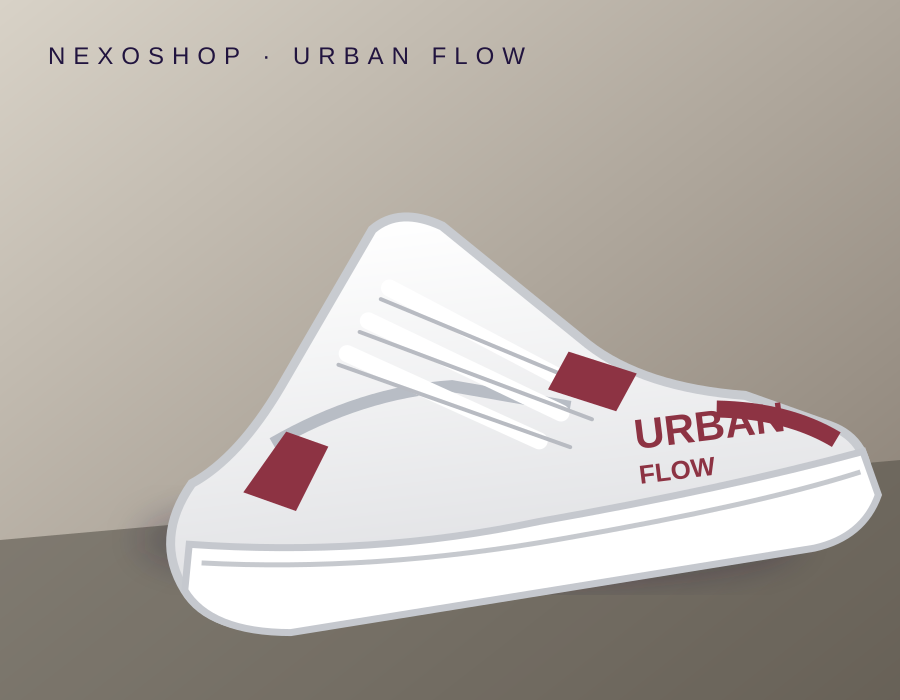

Estilo versátil
Un diseño para looks casuales y urbanos.
NUEVO EN NEXOSHOP
Un look que destaca y una silueta urbana para acompañarte en tus planes de todos los días.
Quiero los míos →DISEÑO URBANO · TU ESTILO, TUS REGLAS
HECHOS PARA DESTACAR
Combina tus outfits con unos tenis de inspiración urbana, tonos versátiles y una silueta con personalidad.
Un diseño para looks casuales y urbanos.
Base blanca con acentos vino tinto.
Una opción para acompañar tus planes cotidianos.
NEXOSHOP SELECT
El toque final para elevar tu estilo diario. Escríbenos y confirma precio, tallas disponibles y opciones de entrega.
Consultar y pedir por WhatsApp ↗La compra se confirma directamente con nuestro equipo.VAMOS CON TU PEDIDO
Te confirmaremos disponibilidad, precio y envío antes de cerrar tu compra.
¿TIENES DUDAS?
Confirma el precio actualizado por WhatsApp antes de comprar.
Indica tu talla en el formulario y nuestro equipo verificará existencias.
Validaremos cobertura, costo y tiempo estimado de entrega contigo.
Solicita las condiciones vigentes de cambios, garantías y devoluciones antes de pagar.
TRANSPARENCIA
1. Responsable. Nexoshop es la marca que presenta esta página. Antes de recibir datos de clientes, el titular debe completar su nombre o razón social, identificación cuando corresponda, domicilio y correo de contacto: [COMPLETAR DATOS DEL RESPONSABLE].
2. Datos tratados. El formulario solicita nombre, ciudad y talla de interés. Al continuar, estos datos se incorporan al mensaje que tú decides enviar por WhatsApp. No pedimos datos bancarios ni contraseñas en esta página.
3. Finalidades. La información se usa para responder consultas, verificar tallas, cotizar, coordinar envíos si compras y atender solicitudes relacionadas. No venderemos tus datos personales.
4. Autorización y terceros. Al enviar voluntariamente el mensaje autorizas el tratamiento para estas finalidades. WhatsApp/Meta aplica sus propias condiciones y políticas.
5. Tus derechos. Puedes conocer, actualizar y rectificar tus datos; solicitar prueba de autorización; conocer su uso; presentar consultas o reclamos y, cuando proceda, solicitar supresión o revocar autorización, conforme a la Ley 1581 de 2012.
6. Consultas y reclamos. Contacta al responsable en [COMPLETAR CORREO DE PRIVACIDAD]. Se atenderán dentro de los términos legales aplicables.
7. Seguridad y conservación. Se aplicarán medidas razonables de seguridad y los datos se conservarán solo el tiempo necesario o el exigido por ley.
8. Cambios. La política vigente estará publicada en esta página con su fecha de actualización.
Esta es una base informativa y no reemplaza la revisión legal. Completa los campos pendientes, define el procedimiento para consultas y reclamos y valida el texto antes de recolectar datos personales.